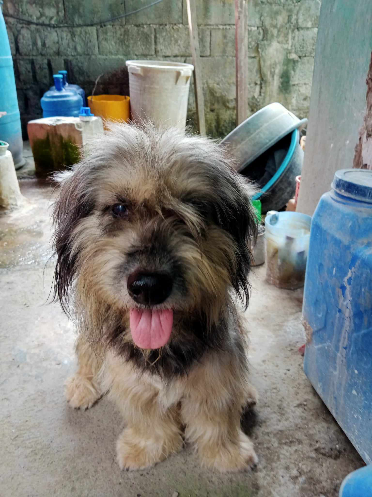
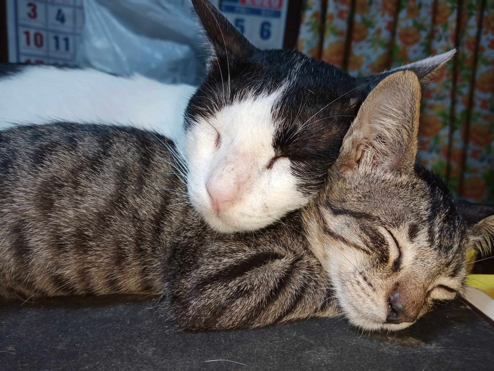

This is me when I was little, with my dear dog Moymoy. Moymoy was my best friend,
always there to play and cuddle. Even though he's no longer with us, I'll never forget the fun times we had together.
Moymoy will always hold a special place in my heart.
This is me and Luki, my dog. Luki was my best buddy, always by my side through thick and thin.
We had the best adventures together exploring every corner of our neighborhood.
Our friendship will always mean the world to me.

HELLO! I'm Moymoy!
HELLO! I'm Luki!
This is my two grown-up cats. They've been with me since they were tiny kittens,
and now they've become part of the family. Over the years, we've shared so many special moments together playing,
cuddling, and simply enjoying each other's company. Even though they've gotten bigger, they're still my adorable furballs,
and I love them more than ever

This is my two little kittens. They were so cute and full of energy,
always keeping me entertained with their playful antics. Watching them grow up has been such a joy,
from their tiny meows to their graceful leaps. Even though they're bigger now, I'll always cherish those precious
kitten memories.